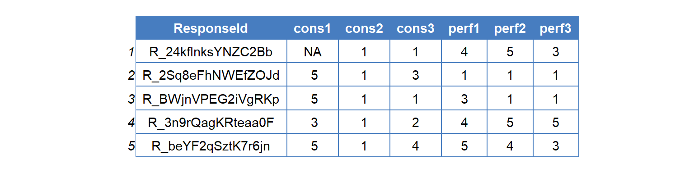
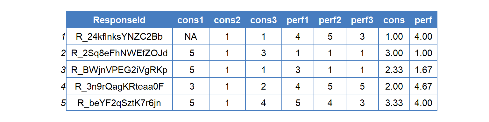

4.5 mutate(): Creating New Variables
- mutate() creates new variables that are defined by some function or operation.
4.5.1 mutate() Structure
mutate(data, new_var = function, …)
- Again, following the general dplyr form (See section 4.1), the first argument specifies the data you are manipulating.
- The next argument specifies the transformation, which in mutate() defines a new variable.
- To do this, you specify a formula that specifies the name of a new variable on the left of the equals sign and a function that creates the new variable on the right.
- In this notation, function refers to any function or operator that creates a vector of output that is as long as the data frame or has a single value.
- Multiple new variables can be created within one mutate() call, but should be separated by commas.
4.5.2 Helper Functions
- rowwise(): Applies functions across columns within rows.
- ungroup(): Undoes grouping functions such as rowwise() and group_by() (group_by() will be discussed in Section 4.7)
4.5.3 Using mutate()
- Given that there are two sub scales (i.e., conscientiousness and performance) within our survey data, we can create scale scores for these sets of items.
- Typically, this is done by averaging the item level data.
- mutate() provides an easy way to do this!

Figure 4.12: Most Recent Data
Example 4.10 Using mutate() and arithmetic operators to create scale scores with missing data.
Figure 4.13: Arithmatic Scale Scores
Example 4.11 Using mutate() and rowwise() to create scale scores while handling missing data (use with caution).

Figure 4.14: Rowwise Scale Scores
- Two new functions are used in the code below.
- percent_rank() calculates the percentage of observations less than an observation.
- cume_dist() calculates the percentage of obseravtions less than or equal to an observation.
Example 4.12 While the above examples illustrate composites, you can also create normalize variables (i.e., percents).
Figure 4.15: Adding Rank Variables
Example 4.13 You can also create binary indicator variables using conditional logic (i.e. if_else() statements). These indicator variables are sometimes referred to a dummy coded variables or one hot encoding.

Figure 4.16: Adding Dummy Variables